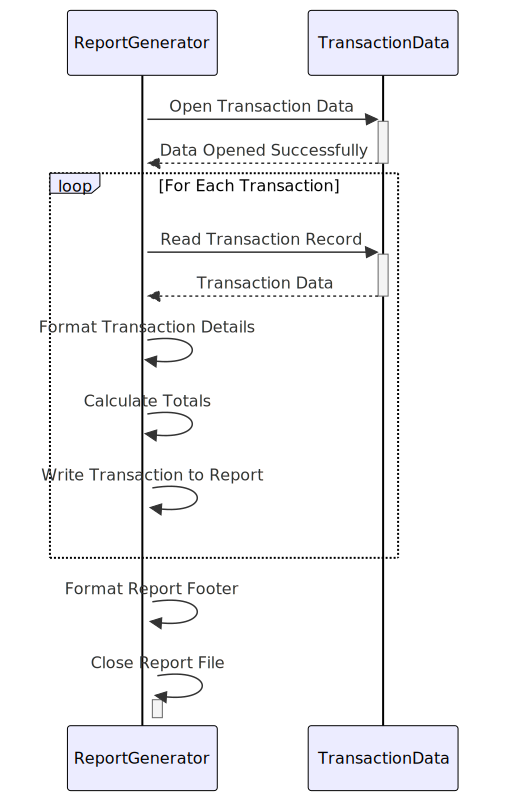

Gerado em: 1º de outubro de 2024
Título do Documento: Especificação de Layout do Relatório de Transações de Cartão
Descrição Resumida: Este documento define o layout de um relatório de transações para um sistema de cartão de crédito, detalhando como os dados de transação devem ser organizados e apresentados.
Histórias do Usuário: Como analista de dados, preciso de um relatório de transações padronizado para analisar padrões de transações diárias, identificar tendências e gerar insights para decisões de negócios.
Epic Relacionado: 5 - Relatórios e Análise
Requisitos Funcionais:
- Cabeçalho do Relatório: O relatório deve incluir uma seção de cabeçalho exibindo:
- Título do Relatório: “Relatório de Transações Diárias”
- Intervalo de Datas: As datas de início e término das transações cobertas no relatório.
- Detalhes da Transação: Cada registro de transação no relatório deve conter os seguintes detalhes:
- ID da Transação: Identificador exclusivo para cada transação.
- ID da Conta: A conta associada à transação.
- Tipo de Transação: Código e descrição do tipo de transação (por exemplo, compra, pagamento, saque).
- Categoria: Código e descrição da categoria da transação (por exemplo, jantar, viagens, entretenimento).
- Origem da Transação: O canal pelo qual a transação foi feita (por exemplo, online, terminal POS, ATM).
- Valor: O valor monetário da transação.
- Cabeçalhos de Coluna: O relatório deve ter cabeçalhos de coluna claros e concisos para cada campo de dados na seção de detalhes da transação.
- Totais: O relatório deve calcular e exibir totais em três níveis:
- Total da Página: A soma dos valores das transações em cada página.
- Total da Conta: A soma dos valores das transações para cada conta exclusiva.
- Total Geral: A soma de todos os valores das transações no relatório.
Requisitos Não Funcionais:
- Legibilidade: O relatório deve ser fácil de ler e entender, usando formatação, alinhamento e espaçamento adequados.
- Precisão: Todos os cálculos no relatório, incluindo totais de página, totais de conta e o total geral, devem ser precisos e consistentes com os dados da transação.
- Consistência: O formato do relatório deve ser consistente entre as diferentes gerações de relatório, garantindo uniformidade para análise e comparação.
Critérios de Aceitação:
- O relatório gerado reflete com precisão o layout definido, incluindo todas as informações de cabeçalho necessárias, detalhes da transação e totais.
- O relatório é gerado em tempo hábil mediante solicitação ou gatilho.
- Todos os dados no relatório são precisos e consistentes com os dados de transação de origem.
- A formatação e o layout do relatório aumentam a legibilidade e facilitam a análise dos dados da transação.
Melhorias de Código:
- Implementar um mecanismo de registro em log para rastrear eventos de geração de relatórios, incluindo timestamps, IDs de usuário e quaisquer erros encontrados.
- Introduzir tratamento de erros para gerenciar situações em que faltam dados ou são inválidos, evitando falhas na geração de relatórios.
- Adicionar comentários ao código para explicar o propósito e a lógica de diferentes seções, melhorando a manutenção do código.
Melhorias de Segurança:
- Implementar controles de acesso para restringir a geração e visualização de relatórios apenas ao pessoal autorizado.
- Se o relatório contiver dados confidenciais, considere a incorporação de técnicas de mascaramento ou criptografia de dados para proteger informações confidenciais.
- Manter uma trilha de auditoria das atividades de acesso e geração de relatórios para garantir a responsabilidade e rastrear o acesso não autorizado em potencial.
Diagrama Conceitual:

–Made by “Smart Engineering” (by Compass.UOL)–